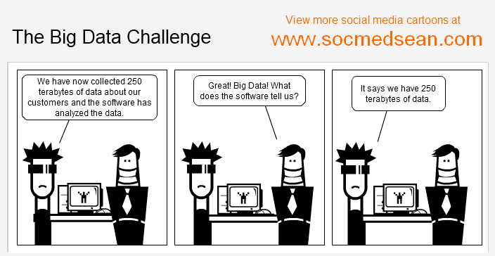

Content
- Algorithms
- Storage
- Hardware
Autumn 2014
Michael (Michael Cochez)
PhD student at MIT department

source: http://www.socmedsean.com/comic-the-critical-element-of-a-successful-big-data-strategy/

source: http://en.wikipedia.org/wiki/Data_analysis
Recommendation and Frequent item sets ?